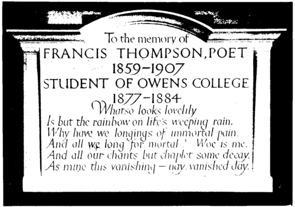

Last Things. Part 2
Description
This section is from the book "The Life Of Francis Thompson", by Everard Meynell. Also available from Amazon: The life of Francis Thompson.
Last Things. Part 2
"Nature," says Emerson, "never spares the opium or nepenthe, but wherever she mars her creature with some deformity or defect, lays her poppies plentifully on the bruise." And even for the bruises made by poppies she has her salve. Some redress, a rebate of the price paid, was made to Francis Thompson for the agony of the opium habit. That he seldom spoke of it meant that it was a thing too bitter to speak of; meant, too, that it was at times a thing too little to speak of, that Nature minimised its terrors. There is mercy for the slave of a bad habit: the more confirmed, the more often must there be periods during which its mastery is forgotten, even in its presence. The sorriest drunkard is not necessarily the drunkard oftenest sorry. The opium-eater is sometimes persuaded of his own invented theory of the causes of his weakness, of its uses and necessity. Francis, who would have loathed himself to the point of extinction, or redemption, if he had been an ordinary sinner, who would have found life with himself intolerable had he sullied life with common offences against the Law, was provided with some sort of protection against remorse for his own particular failing. Nature gave him poppies to set against poppies.
Periods of misery and dejection came to him, as to his fellows. With Coleridge he could in certain moods have written :-" The stimulus of conversation suspends the terror that haunts my mind; but when I am alone, the horrors that I have suffered from laudanum, the degradation, the blighted utility, almost overwhelm me." And again in words very like de Quincey's, Coleridge speaks of "fearful slavery," of being "seduced to the accursed habit ignorantly." From the starker visitations of remorse Coleridge, too, was justly sheltered. His son has said for him :-
" If my Father sought more from opium than the mere absence of pain, I feel assured it was not luxurious sensations or the glowing phantasmagoria of passive dreams; but that the power of the medicine might keep down the agitations of his nervous system, like a strong hand grasping the strings of some shattered lyre."
His own "my sole sensuality was not to be in pain" is sufficient for himself and for others.
F. T.'s comments on Coleridge's case are valuable, since they rebound in his own direction :-
"Then came ill-health and opium. Laudanum by the wine-glassful and half-pint at a time soon reduced him to the journalist-lecturer and philosopher, who projected all things, executed nothing; only the eloquent tongue left. So he perished-the mightiest intellect of the day, and great was the fall thereof. There remain of him his poems, and a quantity of letters painful to read. They show him wordy, full of weak lamentation, deplorably feminine and strengthless."
And again:-
" It is of the later Coleridge that we possess the most luminous descriptions. A slack, shambling man, flabby in face and form and character ; womanly and unstayed of nature; torrentuous of golden talk, the poet submerged and feebly struggling in opium-darkened oceans of German philosophy, amid which he finally foundered, striving to the last to fish up gigantic projects from the bottom of a daily half-pint of laudanum. And over the wreck of that most piteous and terrible figure of all our literary history shines and will shine for ever the five-pointed star of his glorious youth ; those poor five resplendent poems, for which he paid the devil's price of a desolated life and unthinkably blasted powers."
Even if Francis spilled brown laudanum on his paper as he wrote those superlatives, he did not fit the cap of disaster to two heads.
In 1906 he again visited the monastery at Crawley, where his friends had offered him hospitality over many years, and helped him to keep an occasional feast. I take a sample at random of Prior Anselm's courtesy:-
" Holy Saturday.
" Dear Francis,-The Alleluias have been sung, and I echo them to you, dearest friend, hoping they bring you joy and peace and blessings."
Memorial at Owens College, Manchester Carved by Eric Gill.
At Crawley Again :-
" Dear Francis,-Could you give me and the community the great pleasure of your company on the Feast of St. Anthony, when the Bishop of Southwark will assist ? I do hope you will come, as it is the last feast I shall have before the Chapter, an event that may scatter us all to the four winds of heaven."
And again:-
" The community and particularly myself would be delighted to have the pleasure of your company on Oct. 4th, the Feast of our holy Father St. Francis and your name-day. I am looking forward to some long talks. How I long for a return of the happy days at Pantasaph, when we discussed all things in heaven and on earth and in infernis."
Before his departure to Crawley Francis wrote to me :-
"... I feel depressed at going away from you all- it seems like a breaking with my past, the beginning of I know not what change, or what doubtful future. Change as change is always hateful to me; yet my life has been changeful enough in various ways. And I have noticed these changes always come in shocks and crises after a prolonged period of monotony. In my youth I sighed against monotony, and wanted romance; now I dread romance. Romance is romantic only for the hearers and onlookers, not for the actors. It is hard to enter its gates (happily); but to repass them is impossible. Once step aside from the ways of ' comfortable men,' you cannot regain them. You will live and die under the law of the intolerable thing they call romance. Though it may return on you in cycles and crises, you are ever dreading its next manifestation. Nor need you be ' romantic' to others ; the most terrible romances are inward, and the intolerableness of them is that they pass in silence. . . . One person told me that my own life was a beautiful romance. ' Beautiful' is not my standpoint. The sole beautiful romances are the Saints', which are essentially inward. But I never meant to write all this."
Continue to: